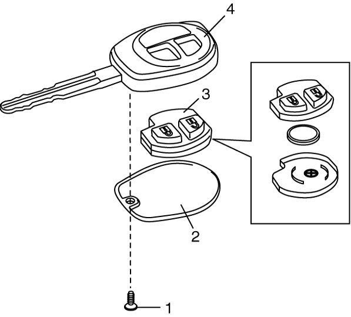

9F
| Replacement of Transmitter Battery (Ignition Switch Model) |
If transmitter becomes unreliable, replace transmitter battery as follows.
1)Remove screw (1) and transmitter cover (2).
2)Remove transmitter (3) from transmitter holder (4).
NOTICE:
If you get foreign material such as grease or dirt on the printed circuit board or battery, the transmitter may malfunction.
Be careful not to get any foreign material on the printed circuit board or battery.
3)With tip of flat-bladed screwdriver put in slot of transmitter, pry it open.
4)Replace the battery (lithium disc-type CR 1616 or equivalent battery) so its (+) terminal faces “+” mark on transmitter.
5)Fit together transmitter (3) and install it into transmitter holder (4).
6)Install transmitter cover (2) and screw (1).
7)Check that door locks can operate with transmitter.


 "Expand image")
NOTE:
•To prevent theft, break transmitter before disposing of it.
•Dispose of the used battery properly according to applicable rules or regulations. Do not dispose of lithium batteries with ordinary household trash.
•Dispose of the used battery properly according to applicable rules or regulations. Do not dispose of lithium batteries with ordinary household trash.